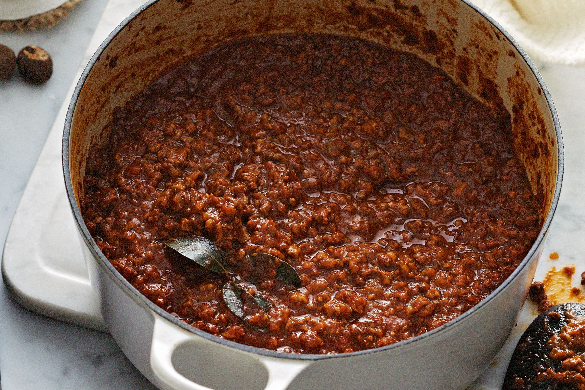

Ragu Bolognese

Genuine ragù alla bolognese is a slowly cooked meat-based sauce,
and its preparation involves several techniques, including sweating,
sautéing and braising. Ingredients include a characteristic soffritto of onion,
celery and carrot, different types of minced or finely chopped beef,
often alongside small amounts of fatty pork. White wine, milk,
and a small amount of tomato paste or tomatoes are added, and the dish
is then gently simmered at length to produce a thick sauce.
Ingredients
- 1kg of Minced meat
- 3 tablespoons of tomate paste
- Half a bottle of wine
- 2dl of cream
- 1 bouillon cube
- 2 onions
- 2 carrots
- 1 celery
- 4 cloves of garlic
- Rime of parmesan
- Spices and Herbs
- Oregano
- Thyme
- Basil
- Bayleaves
- Pinch of cinnamon
Steps
- Start off by finley chopping up your aromatics. This includes the onion,
We want to avoid pieces that distingushes them selves. We want them homogeneous.
- Next step is to sweat the the soffritto in a dutch oven preferably for about 10 minutes on medium heat. The aforementioned aromatics.
- Lift out the soffritto out of the pan and add the minced meat. Cook until the meat gets really nice and brown.
- Add the tomato paste to the pan and let it get direct heat to release a more sweet taste
- Add the soffritto back in to the pan.
- Just before the meat is starting to stick to the bottom of the pan, deglaze with the wine.
- Let the wine get up to a boil and when the smell of alcohol is gone add the bouillon.
- Add two bayleaves, the parmesan rine and a pinch of cinnamon to the pot
- Let the ragu simmer for atleast three hours. Check in on the bolognese during the simmer and add water if needed
- Half an hour before being ready to serve, add the milk and the remaing herbs and let simmer for a while longer
- Boil your pasta al dente and then drain
- Add some of your bolognese into pot with the pasta and toss together
- Serve with extra parmesan to top off